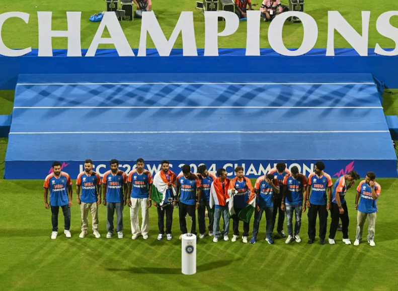
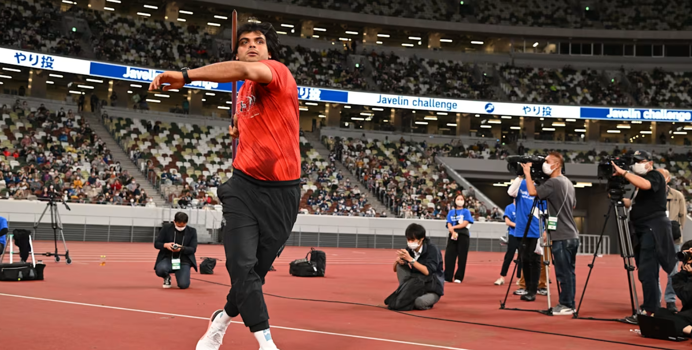

Team India's T20 World Cup Triumph Celebration Highlights: Victory Parade, Felicitation Ceremony And More
Team India's T20 World Cup 2024 Victory Celebration Highlights:The felicitation ceremony for the 2024 T20 World Cup-winning Indian cricket team at Mumbai's Wankhede Stadium concluded on a high. Board of Control for Cricket in India (BCCI) handed the team Rs 125 crore, a prize money the board had already announced for the side after its T20 World Cup triumph. The likes of Virat Kohli, Rohit Sharma, Rahul Dravid and Jasprit Bumrah got a chance to get on the podium and express their emotions. After the felicitation, the players of Indian cricket team walked towards the fans and handed them signed balls before walking out of the ground. Some lucky fans also got selfies with players and their autographs as well. Earlier, a T20 World Cup victory parade of Rohit Sharma and co. kicked off at Marine Drive and concluded at the Wankhde Stadium, crossing a sea of fans who had gathered to celebrate the team's success. The crowd was jam-packed and the Team India bus found hard to get its way. The likes of Virat Kohli, Rohit Sharma, Suryakumar Yadav and ex-coach Rahul Dravid failed to keep their emotions under control as the victory bus slowly and gradually made its way through the massive crowd.
The epic montage of the heart-stopping second innings of the 2024 #T20WorldCup Final between India and South Africa 🎥
The match was a tense affair, with both teams showcasing exceptional fielding skills and strategic bowling. Rain threatened to disrupt the proceedings, but thankfully, the entire 20 overs were completed.
This victory marks a significant moment for Indian cricket. It comes after a narrow loss in the 50-over World Cup final last year and signifies the team's dominance . Rohit Sharma, the victorious captain, praised his team's composure under pressure and hailed this win as a special achievement.
South Africa, despite their valiant effort, fell short of their first World Cup title in any format. However, their performance throughout the tournament has been commendable, and they leave Barbados with their heads held high.
Relief and Elation for Indian Fans
The victory sparked jubilant celebrations across India. Millions erupted in joy, with streets erupting in a sea of blue as fans celebrated the team's long-awaited triumph. This win marks the culmination of years of near misses and heartbreaks in ICC tournaments, making it even sweeter for the passionate Indian fanbase.
PARIS 2024 OLYMPICS: JAVELIN WORLD CHAMPION NEERAJ CHOPRA TO LEAD 28-MEMBER INDIAN ATHLETICS TEAM - FULL SQUAD
A 28-member Indian athletics team, led by men’s javelin throw defending champion Neeraj Chopra, will compete at the Paris 2024 Olympics, the Athletics Federation of India (AFI) announced on Thursday.
Chopra made history three years ago by becoming the first Indian track and field athlete to win a medal at the Olympics, that too a gold. This time, the Indian javelin throw ace will have Olympic debutant Kishore Jena for company in his pet event.
Annu Rani, who won the gold medal at the Asian Games last year, will compete in the women’s javelin throw event.
The 28-member athletics squad for the Paris 2024 Olympics includes eight athletes, who were part of the Indian contingent at the Tokyo Olympics. The Paris-bound squad includes 17 men and 11 women athletes.
Besides Neeraj Chopra and Annu Rani, men’s 3000m steeplechase athlete Avinash Sable, one of Asia’s top men’s shot putter Tajinderpal Singh Toor, women’s race walker Priyanka Goswami and 4x400m relay runners Muhammed Anas, Amoj Jacob and Subha Venkatesan competed in Tokyo three years ago.
Muhammed Anas, part of the Indian men’s 4x400m relay team, will be making his third straight appearance at the Summer Games.
Ace hurdler Jyothi Yarraji, shot putter Abha Khatua and steeplechaser Parul Chaudhary will make their Olympic debuts.
Parul Chaudhary, who will compete in the 3000m steeplechase and 5000m race, is the only athlete chosen to compete in two individual events. She won the gold medal in the 5000m race at the Asian Games last year to go with a silver in the 3000m steeplechase.
National record-holder Akshdeep Singh, Vikash Singh and Paramjeet Singh Bisht will compete in the men’s 20km race walk event while Suraj Panwar will feature in the mixed marathon event with Priyanka Goswami.
Akshdeep Singh, Ram Baboo, Vikash Singh, Paramjeet Singh Bisht and Suraj Panwar were all eligible for selection for the men’s 20km race walk event at the Paris Olympics. Suraj made the cut through world rankings while the remaining four had breached the entry standard.
However, with each country allowed a maximum of three athletes per event and one per gender in the mixed marathon race walk event, Ram Baboo missed out.
Priyanka Goswami, a Commonwealth Games silver medallist, will be the lone Indian in the women’s 20km race walk event at Paris.
Murali Sreeshankar had met the entry standard in the men’s long jump but won’t be able to make it to the Paris-bound team due to an injury.
Fellow long jumper Jeswin Aldrin narrowly missed the cut through the initial Road to Paris rankings list released after June 30 but is certain to enter the final list, to be released by the World Athletics on July 7. He can still make the squad at AFI’s discretion.
Indian athletics team for Paris 2024 Olympics:
- Avinash Sable (men’s 3000m steeplechase)
- Neeraj Chopra (men’s javelin throw)
- Kishore Jena (men’s javelin throw)
- Tajinderpal Singh Toor (men’s shot put)
- Praveen Chithravel (men’s triple jump)
- Abdulla Aboobacker (men’s triple jump)
- Sarvesh Kushare (men’s high jump)
- Akshdeep Singh (men’s 20km race walk)
- Vikash Singh (men’s 20km race walk)
- Paramjeet Singh Bisht (men’s 20km race walk)
- Muhammed Anas (men’s 4x400m relay)
- Muhammed Ajmal (men’s 4x400m relay)
- Amoj Jacob (men’s 4x400m relay)
- Santhosh Kumar Tamilarasan (men’s 4x400m relay)
- Rajesh Ramesh (men’s 4x400m relay)
- Mijo Chacko Kurian (men’s 4x400m relay)
- Suraj Panwar (race walk mixed marathon)
- Kiran Pahal (women’s 400m)
- Parul Chaudhary (women’s 3000m steeplechase and 5,000m)
- Jyothi Yarraji (women’s 100m hurdles)
- Annu Rani (women’s javelin throw)
- Abha Khatua (women’s shot put)
- Jyothika Sri Dandi (women’s 4x400m relay)
- Subha Venkatesan (women’s 4x400m relay)
- Vithya Ramraj (women’s 4x400m relay)
- MR Poovamma (women’s 4x400m relay)
- Prachi (women’s 4x400m relay)
- Priyanka Goswami (women’s 20km race walk and race walk mixed marathon)